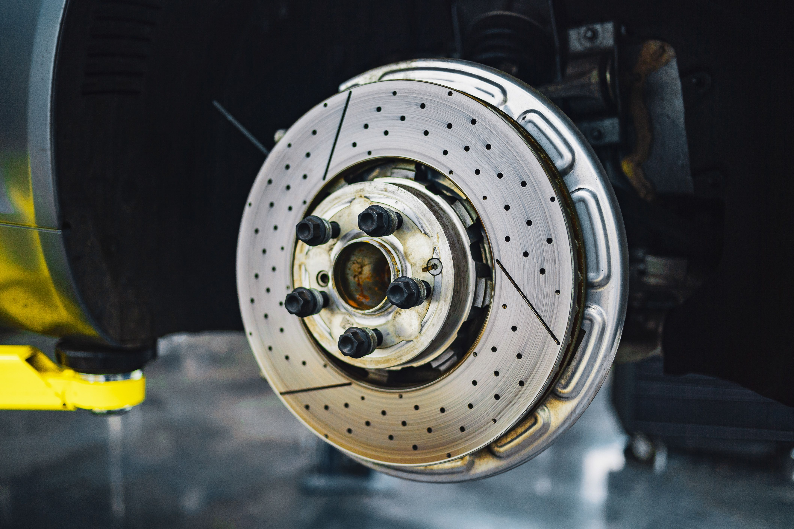

Why Are My Brakes Squeaking When I Stop?

In most cases, squeaking brakes are caused by worn-out brake pads reaching their built-in wear indicator, morning moisture/rust buildup on the rotors, or cheap brake pad material. If the squeak turns into a harsh metallic grinding, your pads are fully depleted and damaging the rotors.
Top 5 Reasons Your Brakes Are Squeaking
Brake squeal is one of the most common complaints drivers face. While some squeaking is harmless temporary friction, other sounds are a direct warning that your braking system requires immediate service.
1. Worn Brake Pad Wear Indicators
Modern brake pads feature a small steel tab called an acoustic wear indicator. When the pad material wears down to approximately 2mm to 3mm, this metal tab contacts the rotor, producing a high-pitched squeak specifically designed to alert you before total pad failure.
2. Surface Rust and Morning Humidity
If your brakes squeak only during the first few stops in the morning after rain or high humidity, this is normal. Cast iron brake rotors oxidize quickly overnight. The squeak will disappear once the pads scrape away the microscopic rust layer after a couple of stops.
3. Hard Brake Pad Material (Semi-Metallic Pads)
Semi-metallic brake pads contain high metal content for durability and heat resistance. However, hard metallic compounds naturally generate more noise against iron rotors compared to softer ceramic brake pads.
4. Glazed Rotors or Brake Pads
Repeated hard braking or riding the brakes down steep hills generates extreme heat. This causes the pad surface to harden into a smooth, shiny glaze that vibrates rapidly against the rotor, causing a persistent squeal.
5. Missing Anti-Squeal Clips or Lubricant
During a brake job, technicians install stainless steel shims and apply brake grease to the contact points behind the pad backing plate. If grease dries out or shims are omitted, brake pads vibrate loose in the caliper bracket, creating noise.
Is It Safe to Drive with Squeaking Brakes?
If the squeaking happens occasionally or goes away after warm-up, it is generally safe to drive to a mechanic or complete your trip. However, if you hear a **loud grinding noise** (like metal scraping metal), stop driving immediately — your brake pads are completely gone, and continuing will destroy the rotors and calipers.
Frequently Asked Questions
A standard brake pad replacement usually costs between $150 and $300 per axle. If rotors also need replacing, cost ranges from $300 to $600 per axle.
Aerosol quiet-brake sprays can provide temporary relief, but they do not solve physical wear or glazed rotors.